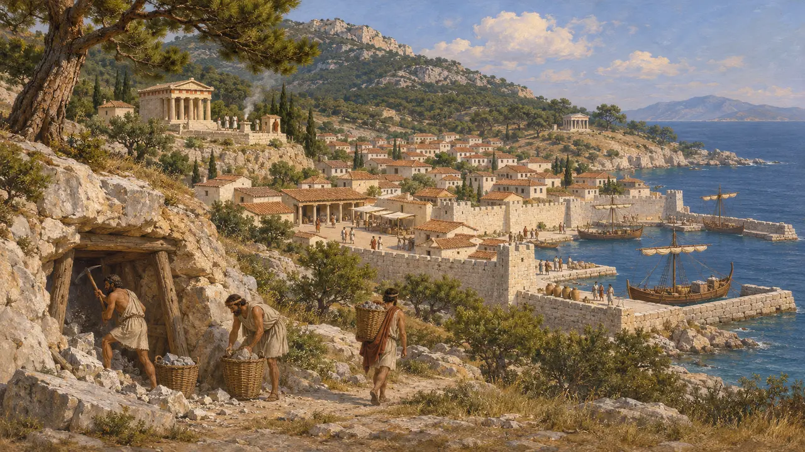
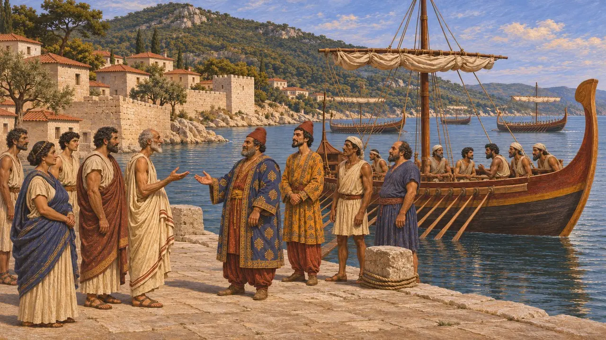
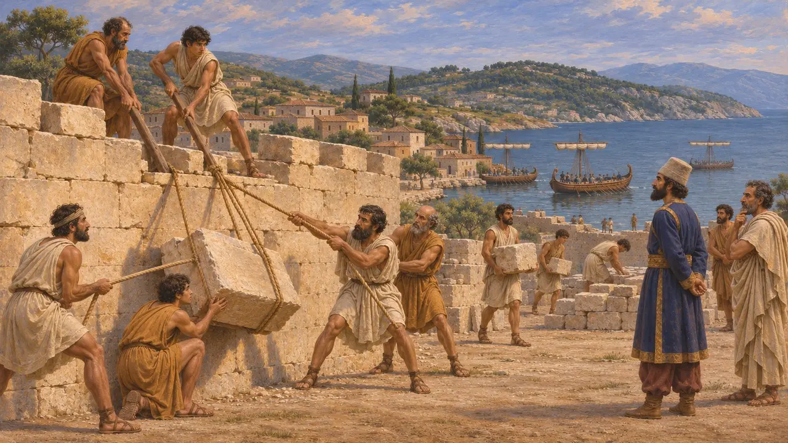
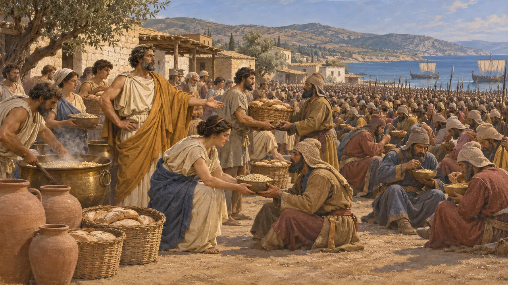
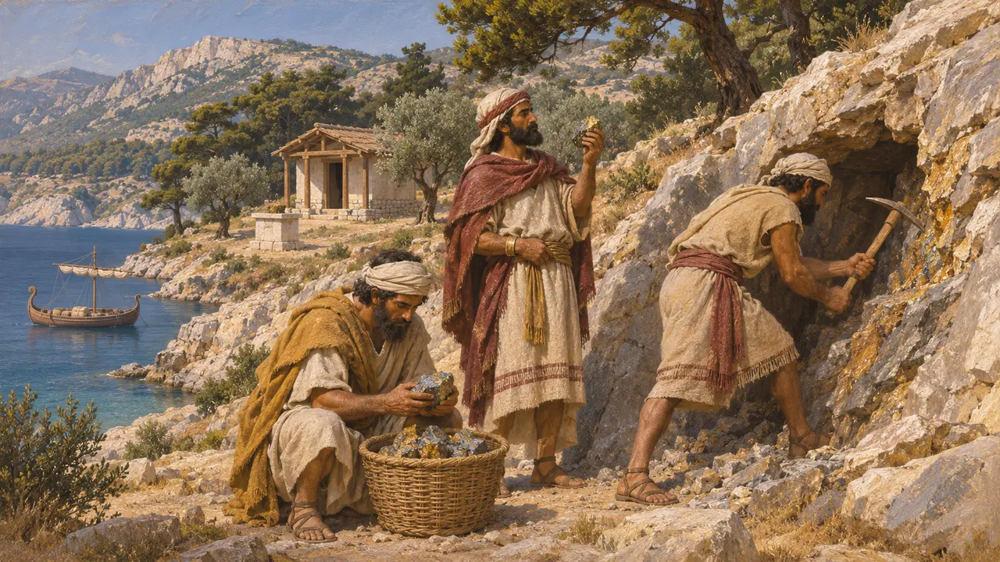

Thasos
Kuzey Ege'de altınca zengin Yunan ada kenti; MÖ 492-479 arasında Pers egemenliğinde
Thasos, Trakya kıyısı açıklarında bir Yunan ada kentiydi. 7. yüzyılda Paroslu yerleşimciler tarafından kuruldu; adadaki ve karşı anakaradaki altın ve gümüş madenleri onu zenginleştirdi. MÖ 492'de Pers denetimine girdi, MÖ 491'de Dareios'un buyruğuyla surlarını yıktı ve MÖ 480'de Yunanistan'a yürüyen Kserkses'in ordusunu besledi.
Oyunda: Oyun, Thasos'u bir ticaret ortağı olarak gösterir. Tarihte Thasos MÖ 492'ye dek bağımsız bir Yunan kentiydi, ardından Kralın buyruklarına uyan bir tebaa kenti oldu; bu yüzden ticaret rolü bir basitleştirmedir.

Bir Paros kolonisi ve madenleri
BelgelerdeAtina Fransız Okulu'nun 1911'de başlattığı kazılar, adanın kuzey kıyısındaki antik kenti gün ışığına çıkardı. Kazılarda limanlar, agora, Herakles ve Artemis kutsal alanları ile kenti çevreleyen surlar bulundu; adada antik maden işletmelerinin izleri de günümüze ulaşmıştır. En erken Yunan katmanları, daha eski bir Trak varlığının yanında 7. yüzyıla ait bir Paros yerleşimine uyar. Kent, 6. yüzyılın sonlarından itibaren kendi gümüş sikkelerini bastı.
Y. Grandjean and F. Salviat, Guide de Thasos, 2000

Histiaios ve Mardonios'un donanması
Antik anlatıHerodotos'a göre İonların Lade'deki yenilgisinden sonra Miletli Histiaios, İonlar ve Aiolialılarla Thasos'u kuşattı. Fenike donanmasının yaklaştığını duyunca kuşatmayı bıraktı. MÖ 492'de Mardonios ile gönderilen donanma adayı ele geçirdi; Herodotos, Thasosluların hiç direnmediğini bildirir.
Herodotus 6.28; Herodotus 6.44

Dareios surların yıkılmasını buyuruyor
Antik anlatıHerodotos'a göre MÖ 491'de komşuları Thasosluları ayaklanma hazırlığıyla suçlamış, Dareios da onlara surlarını yıkmalarını ve gemilerini Abdera'ya getirmelerini buyurmuştur. Thasoslular itaat etmiştir. Surları ve gemileri Histiaios'un kuşatmasından sonra, adanın madenlerinden ve anakaradan elde edilen, olağan bir yılda 200, en iyi yılda 300 talent tutan gelirlerle yaptırmışlardı; yalnızca Skapte Hyle 80 talent getiriyordu. Herodotos adanın madenlerini kendi gözleriyle gördüğünü söyler.
Herodotus 6.46-48

Kserkses'in ordusunu beslemek
Antik anlatıMÖ 480'de Kserkses, Thasos'un elindeki anakara kentlerinin yanından geçerek Trakya'da ilerledi ve Thasoslular onun ordusunu doyurmak zorunda kaldı. Herodotos'a göre ziyafeti düzenleyen önde gelen yurttaş Antipatros, masrafın 400 talent gümüş tuttuğunu bildirdi. Herodotos, Abderalı Megakreon'un şakasını da ekler: Megakreon, kentlerin Kserkses günde yalnızca bir kez yemek yediği için tanrılara şükretmesi gerektiğini söylemişti. Bu meblağ Herodotos'un aktarımıdır ve şişirilmiş olabilir.
Herodotus 7.118-120

Fenikeli kurucular
TartışmalıHerodotos, Fenikelilerin Thasos'a Yunanlılardan önce ulaştığına inanıyordu. Europa'yı arayan Fenikelilerin oradaki Herakles tapınağını kurduğunu, Thasos adlı bir Fenikelinin adaya adını verdiğini ve halkının ilk madenleri açtığını söyler. Arkeologlar Fenike yerleşimine dair açık bir iz bulamamıştır. Pek çok tarihçi hikâyeyi Herakles kültünü ve eski maden kazılarını açıklayan bir Yunan anlatısı olarak yorumlar; ancak bazıları bir tür Fenike temasının mümkün olduğunu düşünür.
Herodotus 2.44; Herodotus 6.47
Kaynaklar
- Herodotus 6.46-48
- Herodotus 7.118-120
- Herodotus 6.28; 6.44
- Herodotus 2.44
- Y. Grandjean and F. Salviat, Guide de Thasos, 2000
- P. Briant, From Cyrus to Alexander, 2002